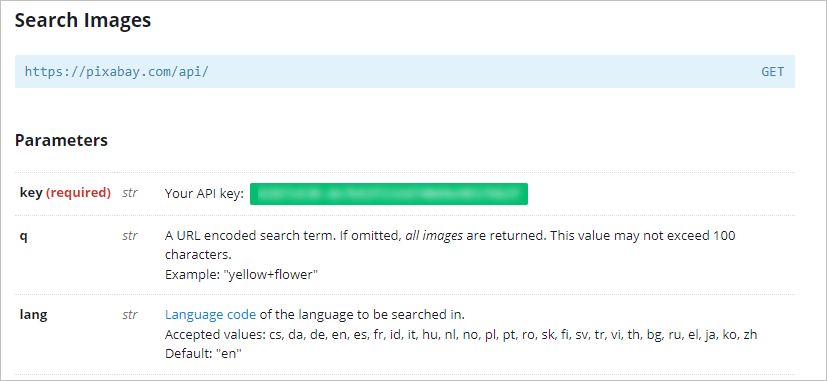
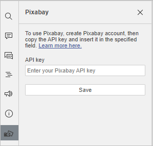
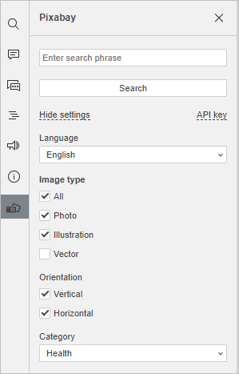
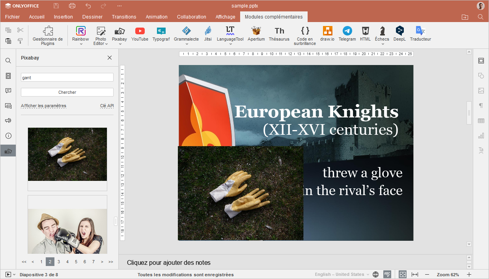

Pixabay
Le module complémentaire Pixabay permet d'ajouter des images à votre présentation depuis une collection d'images gratuites et libres de droits du service Pixabay.
Le module complémentaire est compatible avec la version auto-hébergée et la version de bureau des éditeurs ONLYOFFICE et peut être ajouté manuellement aux instances ONLYOFFICE à l'aide du Gestionnaire de plugins.
Installation
Pour installer le module complémentaire Pixabay,
- Passez à l'onglet Modules complémentaires.
- Ouvrez le Gestionnaire de plugins.
- Recherchersur marketplace et cliquez sur le bouton Installer au-dessous.
- Cliquez surl'icône Pixabay sous l'onglet Modules complémentaires.
- Poursuivez la configuration du module complémentaire.
Pour en savoir plus, veuillez consulter la documentation API ONLYOFFICE.
Configuration
- Connectez-vous à votre compte Pixabay ou créer un nouveau compte.
- Passez à la section Search Images (Rechercher des images) sur la page Pixabay API.
- Faites défiler la page vers le bas jusqu'à la liste des Paramètres et copiez la clé indiquée en tant que paramètre Key (Clé). Si vous n'êtes pas connecté, appuyez sur Login (Se connecter) à côté du paramètre Key (Clé).

- Collez la clé dans le champ Clé API dans le panneau gauche sous l'onglet Modules complémentaires de l'éditeur de présentations.
- Cliquez sur Enregistrer.

Utilisation
- Passez à l'onglet Modules complémentaires.
- Cliquez surl'icône Pixabay.
- Sur le panneau gauche qui s'affiche, saisissez le mot clé associé à l'image recherchée.
- Utilisez le bouton Afficher les paramètres pour affiner votre requête utilisant les options suivantes: Langue, Type d'image, Orientation et Catégorie. Cliquez sur Masquer les paramètres pour diminuer la section de recherche.

- Cliquer sur Chercher.
- Parcourez les résultats de recherche et cliquez sur l'image à ajouter à votre présentation.
